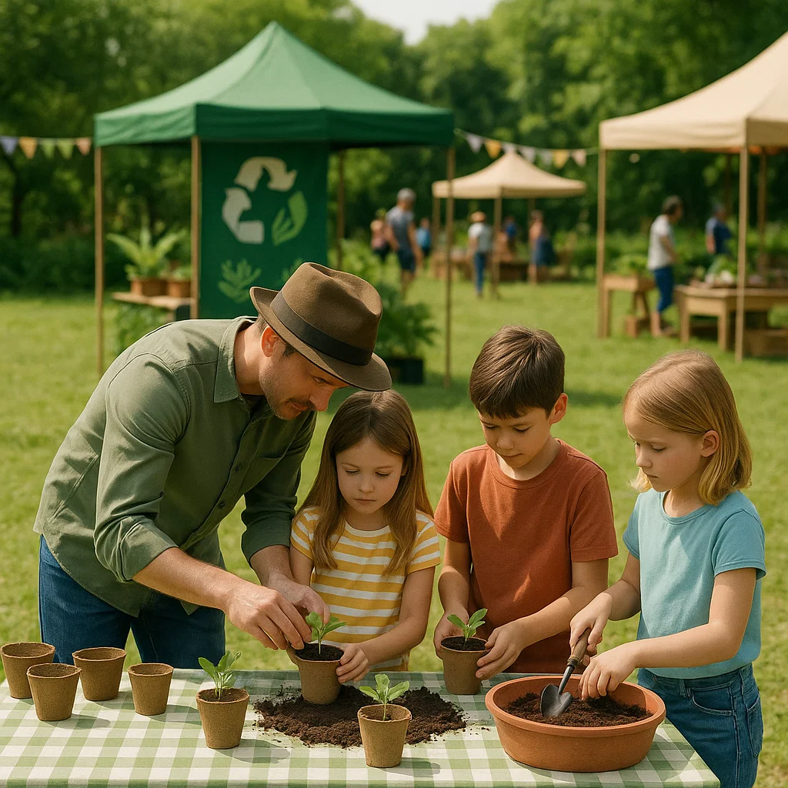

Descubrí talleres, charlas y experiencias
pensadas para vivir la sustentabilidad en acción.
Sumergite en la experiencia de armar y mantener tu propia huerta casera. Durante este taller aprenderás a:
Aprendé en 30 minutos cómo pasar de “usar y tirar” a reutilizar, reparar y reciclar. Veremos ejemplos locales de empresas circulares, consejos prácticos para clasificar residuos en casa y tips para consumir de forma más consciente. Cada asistente recibirá un infográfico con pasos concretos para implementar en su día a día.
Actividad diseñada para niños de 6 a 12 años: jugá con tierra, semillas y macetas recicladas para armar tu propia plantita. Aprenderán a sembrar, regar y cuidar un germen que se llevarán a casa, mientras descubren por qué las plantas son tan importantes para el planeta.
Mirá en acción cómo funcionan nuestros paneles plegables: instalalos en menos de 2 minutos y conectá tu celular o lámpara LED sin enchufe. Verás en vivo su potencia de carga, aprenderás consejos de orientación al sol y entenderás por qué son la alternativa ideal para hogares y salidas al aire libre.